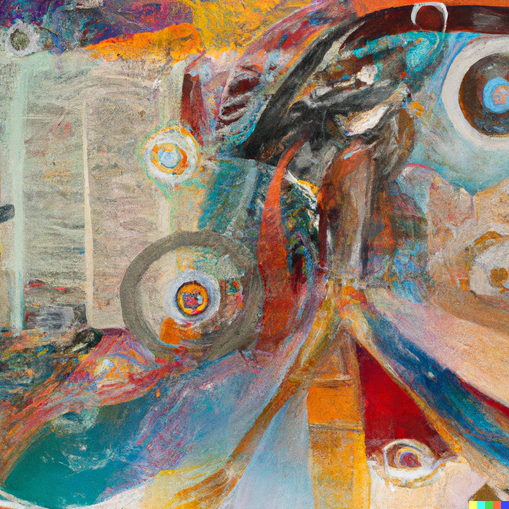
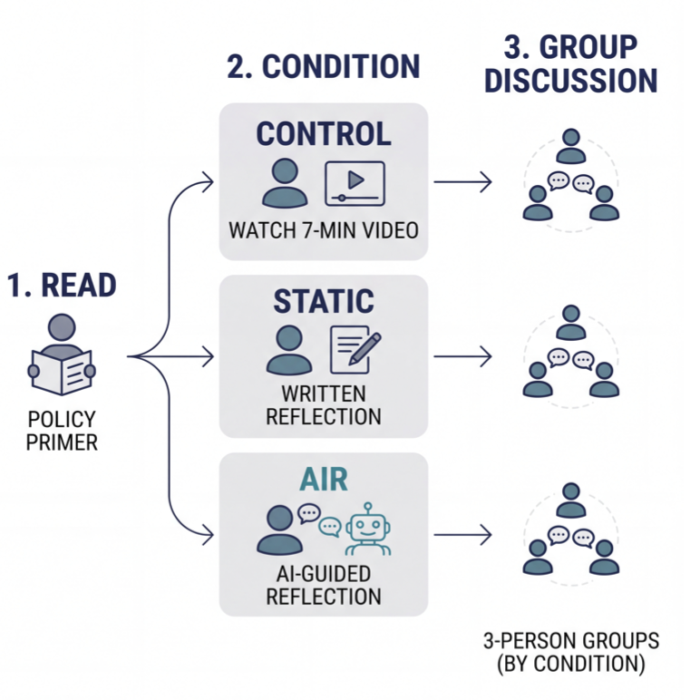
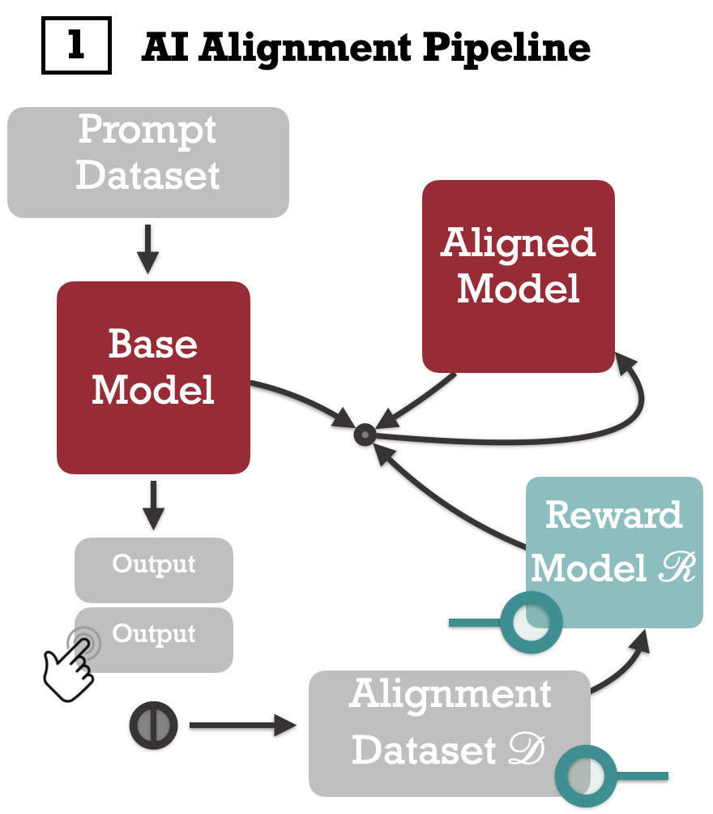
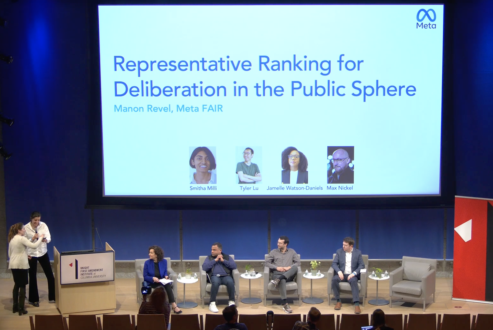
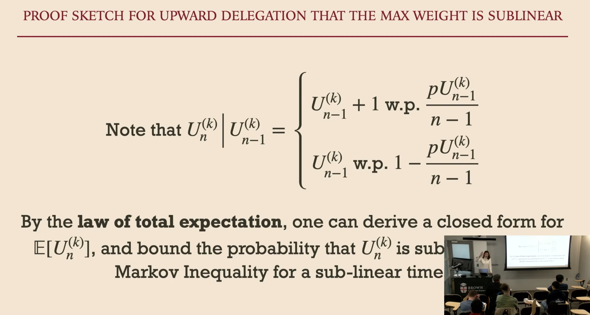

New
Disagreement in the Age of AI
Harvard
with Lawrence Lessig, James Mickens, David Deming, Shannon Vallor and Brian Jeon

Researcher @ Google DeepMind

Senior Research Scientist, Google DeepMind
PhD in Social and Engineering Systems and Statistics, MIT · Postdoctoral Fellow, Harvard · Postdoctoral Research Scientist, Meta FAIR
Interests: probabilistic modeling · multi-agent decision theory · network science · computational social choice · reinforcement learning from human feedback
Hi! I'm Manon. I research collaborative decision-making in humans. My work bridges mathematical frameworks with large-scale empirical studies to study collective agency in a networked, AI-mediated world.
During my PhD at MIT, I developed mathematical theories and led the first laboratory experiments evaluating liquid democracy—a scheme where individuals delegate decisions dynamically using second-order knowledge (what I know about what you know).
Previously, I was a Doctoral Fellow at the Harvard Kennedy School and started and led an AI and democracy research agenda at the Berkman Klein Center. I have taught at MIT and the University of Notre Dame, and interned at Palantir, the Center for Strategic and International Studies, and Bell Labs.
🎙 Keynote at the European Digital DemocracY network; talks at UC Berkeley's Simons Institute, the AI Summit at UMD, the SSPS series at Cambridge, and the Gruter Institute's Evolving Slowly, Changing Fast conference
🥁 AI-Enhanced Deliberative Democracy and the Future of the Collective Will published by Philosophy & Technology
🥁 The Community Alignment Dataset (led by Lily Zhang and Smitha Milli) accepted at ICLR
🥁 Papers at ICML (Representative Ranking; Democracy Levels), ACL (Arbiters of Ambivalence), and Management Science (Tracking Truth with Liquid Democracy)
🎙 Shared thoughts on AI and society in the French TV documentary De l'Homme à la Machine
🎙 Talks at the Cooperative AI Foundation, UrbanAI, the Knight Symposium, the LSE-NYU Conference, and Oxford's Institute for Ethics in AI
tl;dr: A brief interaction with a non-directive AI reflector prior to discussion improves group deliberation quality, outgroup empathy, and understanding.

AIR significantly improved group discourse quality compared to control (Cohen's d = 0.31) and solitary reflection (d = 0.27), particularly in disagreeing groups, while enhancing outgroup empathy. Solitary reflection offered no benefit over control and slightly polarized stances (d = 0.14). Total opinion change was uniform across conditions, meaning AIR shifted the timing of reconsideration rather than steering opinions.
tl;dr: We review mathematical methods used to elicit and approximate the collective will—from Dr Gallup's poll to DeepMind's Habermas Machine.
This article examines the technical and normative design choices behind computational frameworks for finding common ground across preferences. Tracing preference elicitation from traditional opinion polls to AI-facilitated collective judgment, we highlight its potential as a sense-making and agreement-seeking discovery tool while cautioning against dangerous uses like binding decisions or post-rationalizing political outcomes.
tl;dr: Pro-social ranking algorithms can inadvertently hide legitimate viewpoints. We develop ranking algorithms that guarantee the representation of plural perspectives.
While algorithms designed to foster high-quality discussions in comment sections help filter out toxicity, they can also inadvertently suppress legitimate plural viewpoints. This paper introduces justified representation (JR) from social choice into comment-ranking algorithms. Enforcing JR guarantees greater inclusion of diverse perspectives while remaining fully compatible with optimizing for user engagement and conversational quality.
tl;dr: Some reward models in RLHF resist learning training split preferences, assigning higher rewards to human-rejected entries.

tl;dr: We extend the Condorcet Jury Theorem to transitive delegation networks, proving new statistical properties and validating them with human experiments.
 Liquid democracy allows voters to participate directly or delegate votes transitively to trusted peers, leveraging second-order social graph knowledge. To evaluate its likelihood of success, we developed a mathematical theory mapping local delegation behaviors to macro graph dynamics in In Defense of Liquid Democracy, proving new results for infinite Pólya-urn processes and weighted majorities. This framework was validated through human experiments (Liquid Democracy in Practice) and robustly matched theory in Tracking Truth with Liquid Democracy.
Liquid democracy allows voters to participate directly or delegate votes transitively to trusted peers, leveraging second-order social graph knowledge. To evaluate its likelihood of success, we developed a mathematical theory mapping local delegation behaviors to macro graph dynamics in In Defense of Liquid Democracy, proving new results for infinite Pólya-urn processes and weighted majorities. This framework was validated through human experiments (Liquid Democracy in Practice) and robustly matched theory in Tracking Truth with Liquid Democracy.
tl;dr: We derive new optimal sizing and aggregation rules for representative assemblies within the Condorcet epistemic framework.
However small the Republic may be, the Representatives must be raised to a certain number... and however large it may be, they must be divided to certain number... Federalist Paper No.10, James Madison
In How Many Representatives Do We Need?, we answer what optimal number of unweighted experts maximizes majority-vote correctness. Contrary to past sub-linear growth conjectures, we prove that sampling top experts requires an optimal congress size that scales linearly with the population size, holding even under high individual accuracy. However, if competence declines too rapidly with scale, a single expert can asymptotically outperform a majority vote.
More work in the publications list →
Harvard
with Lawrence Lessig, James Mickens, David Deming, Shannon Vallor and Brian Jeon
France Télévisions
with Yann LeCun, Joelle Pineau, Kunihiko Fukushima, Tom Mitchell, and Yoshua Bengio

Columbia University

Brown University
French Consulate in New York
with chess master Garry Kasparov and former minister Hubert Védrine
Created curriculum covering political philosophy, mathematical theories of representation, and algorithms for deliberation.
Co-designed and taught the seminar during IAP 2024.
Co-assisted Professor Gamarnik in an introductory probability, statistics and optimization class for the MIT Sloan Fellows MBAs.
Created and taught a 15-hour seminar for the MIT Technology and Policy Masters Students.